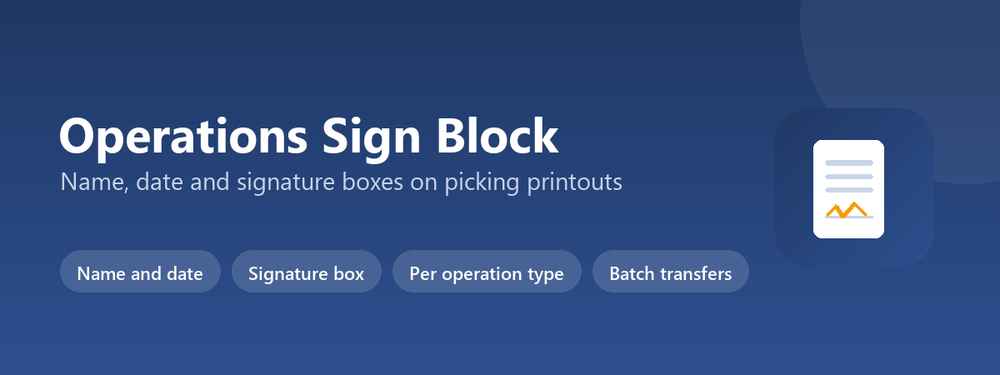

Prints name, date and signature boxes at the end of the Picking Operations and Batch Transfer printouts, for the operation types you choose.
Tick one option on an operation type and its printouts end with three boxes to fill in by hand: name, date and time, and signature. The person who hands over or receives the goods signs the sheet, and you keep a paper trail. No other document changes.
✍ Three sign-off boxesName, date and time, and signature boxes are printed at the end of the document, ready to fill in by hand. |
📄 Picking and batch sheetsThe block is added to the Picking Operations document and to the Batch Transfer document. |
⚙ Per operation typeTurn it on only for the operation types that need a signature. A batch follows its own operation type. |
👁 Visible at a glanceAn optional column in the list of operation types shows which ones print the block. |
Odoo 18.0 • Community & Enterprise • depends on Inventory and Batch Transfers • Licence LGPL-3
Odoo implementation and development. thecodelegion.com